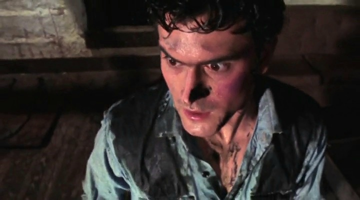

The Beginning Of Ash's Journey
The First Encounter With The Evil Dead

Ash Williams travelling toward the Knowby cabin.
The Journey To The Knowby Cabin
Before becoming the legendary figure known as El Jefe, Ashley Joanna Williams was an ordinary young man travelling with his friends to a remote cabin hidden deep within the woods of Tennessee. Ash arrived alongside Linda, Cheryl, Scotty and Shelly, expecting nothing more than a quiet holiday away from everyday life.
Unknown to the group, the cabin held a dark history. Years earlier, Professor Raymond Knowby had discovered the ancient Necronomicon Ex Mortis while researching forgotten languages and supernatural forces. His studies into the Book of the Dead would awaken a powerful evil presence connected to the location.
Ash and his friends had unknowingly entered a place where the barrier between the human world and ancient darkness had already been weakened. Their discovery of Knowby's recordings would begin the chain of events that transformed Ash's life forever.

The discovery of the Necronomicon Ex Mortis begins Ash's battle against the Evil Dead.
The Awakening Of The Kandarian Evil
While exploring the cabin, Ash and his friends discover Professor Knowby's research materials, including an audio recording containing passages from the Necronomicon Ex Mortis. When the ancient words are spoken aloud, the hidden force connected to the book is awakened.
The entity released from the Necronomicon is not a simple creature, but an ancient supernatural intelligence capable of influencing, possessing and corrupting the living. It begins to turn the people inside the cabin against one another, using fear and deception as weapons.
This moment marks the true beginning of Ash's transformation. He is no longer simply a young man on a trip with friends; he becomes the unwilling participant in a battle against forces far beyond human understanding.

Ash witnesses the people closest to him fall under the influence of the evil.
The Fall Of Ash's Friends
As the evil spreads throughout the cabin, Ash watches in horror as those around him are consumed by the forces unleashed from the Necronomicon. Cheryl becomes one of the first victims, transformed into a Deadite after being attacked by the unseen evil within the woods.
Shelly and Scotty also become victims of the darkness, leaving Ash increasingly isolated as he struggles to understand what is happening around him. The Deadites do not simply attack through physical violence; they exploit fear, memories and the emotions of their victims.
With each loss, Ash is pushed further into a conflict he never asked for. The ordinary life he knew begins to disappear, replaced by a desperate fight against an ancient evil that refuses to be stopped.

Ash faces the horrifying reality of Linda's possession.
The Loss Of Linda
Linda, Ash's girlfriend, becomes one of the most personal victims of the Kandarian evil. After being possessed by the entity connected to the Necronomicon, Linda returns as a Deadite, forcing Ash to confront the devastating reality that even those closest to him can be corrupted.
Her possession becomes one of the defining moments of Ash's transformation. His struggle is no longer only about escaping the cabin; he is now fighting against the evil itself and the impossible choices it forces him to make.
Linda's fate leaves a lasting impact on Ash and becomes one of the experiences that shapes the warrior he will eventually become.

Ash attempts to end the nightmare by destroying the Necronomicon.
Ash Destroys The Book
With his friends gone and the cabin consumed by darkness, Ash is forced to confront the source of the evil unleashed from the Necronomicon Ex Mortis. He discovers that the only way to end the nightmare is to destroy the Book of the Dead itself.
Ash burns the Necronomicon, believing that he has finally ended the horror that began in the woods. However, the ancient forces connected to the book are far more powerful than he understands, and this battle becomes only the first chapter of his lifelong conflict with the Evil Dead.
Although Ash does not yet know the full meaning of his destiny, his actions at the cabin begin the path toward the role described within the Necronomicon's ancient prophecy.

The beginning of Ash Williams' legendary journey.
The Battle Continues
The events at the Knowby cabin are not the end of Ash Williams' story. Although he believes the evil has been defeated, the forces connected to the Necronomicon Ex Mortis are not finished with him.
Ash's encounter with the Evil Dead marks the beginning of a much larger destiny. What started as a fight for survival will eventually reveal that he is far more than an ordinary man caught in a supernatural nightmare.
The ancient writings of the Necronomicon would later reveal Ash as the prophesied hero destined to stand against the darkness. His battle would continue beyond the cabin, but the canin wasn't quite done with him yet.

Ash's continued battle with the Necronomicon Ex Mortis and the forces it unleashes.
The Return Of The Necronomicon
Ash's battle against the Evil Dead was far from over. The darkness connected to the Necronomicon Ex Mortis continued to follow him beyond the events at the Knowby cabin, drawing him back into another confrontation with the ancient forces unleashed by the Book of the Dead.
Rather than ending with the destruction of the evil, Ash found himself facing a new wave of supernatural horrors. The Necronomicon's power remained active, and the ancient entity connected to the book continued its attempts to break into the human world.
This second encounter would push Ash beyond anything he had experienced before. No longer simply a frightened man trying to escape the nightmare, he began to become the warrior who would eventually be known throughout history as the enemy of the Deadites.

Ash begins to embrace the role forced upon him by the forces of darkness.
The Transformation Of Ashley Williams
Through repeated encounters with the Evil Dead, Ash begins to change. The ordinary man who first arrived at the cabin is gradually replaced by someone hardened by impossible circumstances and countless battles against supernatural forces.
The horrors Ash experiences do not simply make him stronger physically; they force him to develop the courage and determination needed to stand against entities far older and more powerful than himself.
Although Ash often remains reluctant and unwilling to accept the role placed upon him, the prophecy surrounding the Necronomicon begins to take shape. The man who once wanted only to escape the darkness becomes the one person capable of opposing it.

Ash's destiny extends beyond his own time.
The Prophesied Hero
The ancient writings connected to the Necronomicon reveal that Ash's encounters with the Evil Dead are not random. The Book of the Dead contains references to a chosen warrior from the sky, a figure destined to oppose the darkness and stand against the forces it commands.
Ash's journey becomes a strange contradiction. He is not a hero who seeks glory or power; he is an ordinary man repeatedly forced into extraordinary circumstances. Yet through every battle, he proves himself capable of resisting the evil that destroys others.
The prophecy transforms Ash's struggle from a personal fight for survival into something far greater. His battles become part of an ancient conflict between humanity and the supernatural forces connected to the Necronomicon.
The Legend Of El Jefe
Across different eras, Ash Williams would continue his battle against the Evil Dead, becoming a legendary figure feared by the forces of darkness and remembered as the warrior who repeatedly stood against them.
From the remote woods of Tennessee to encounters with ancient kingdoms and future generations, Ash's story becomes one of endurance, defiance and an unwilling hero's journey against impossible odds.
Though Ash never asked for the destiny written within the Necronomicon, he ultimately becomes the figure foretold within its pages: the one warrior capable of facing the darkness and fighting back against the Evil Dead.